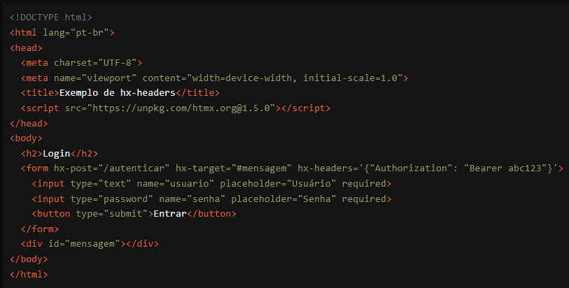

Estamos empolgados em apresentar uma funcionalidade poderosa e flexível do HTMX que oferece um controle refinado sobre suas requisições HTTP: o atributo `hx-headers`. Com `hx-headers`, você pode incluir cabeçalhos personalizados nas requisições HTTP, oferecendo maior controle e personalização nas interações do usuário com sua aplicação. Vamos explorar como essa funcionalidade pode elevar o nível das suas aplicações web.
O que é o atributo `hx-headers`?
O `hx-headers` é um atributo do HTMX que permite adicionar cabeçalhos personalizados às
requisições HTTP. Cabeçalhos HTTP são informações adicionais enviadas junto com a requisição,
que podem ser usadas para diversas finalidades, como autenticação, controle de cache,
especificação de formatos de dados, entre outros. O uso de `hx-headers` é especialmente útil
quando você precisa enviar informações adicionais ao servidor de forma consistente em todas as
requisições feitas por elementos HTMX.
Como Funciona?
Vamos ver um exemplo prático para entender melhor como o `hx-headers` pode ser usado.
Suponha que você tenha um formulário de login e deseja enviar um cabeçalho personalizado para
autenticação:

Neste exemplo, quando o formulário de login é submetido (requisição HTTP POST para a URL "/autenticar"), o cabeçalho personalizado `Authorization` com o valor `Bearer abc123` é incluído na requisição graças ao atributo `hx-headers`. O servidor pode então usar esse cabeçalho para autenticar a requisição.